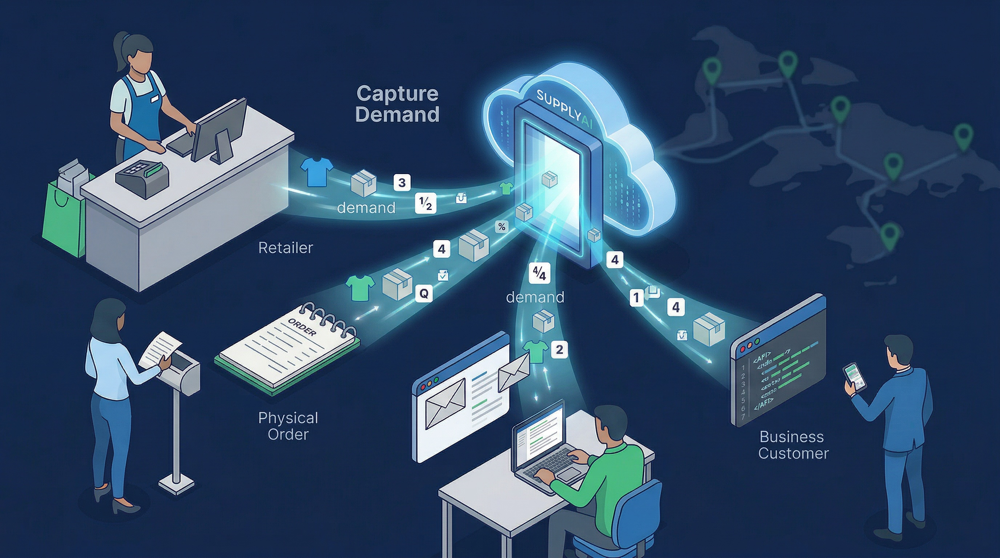

SUPPLYAI is a technology and operations platform focused on modernizing the Asian food distribution ecosystem in North America.
We believe that AI is most powerful when it is deployed within real operating environments. The Asian food supply chain is a vital but fragmented industry that relies heavily on manual coordination and legacy systems.
By bringing together industrial-grade AI, operational discipline, and physical distribution infrastructure, we are building the foundation for a more transparent and scalable supply chain.

Our vision is to help transform the Asian food supply chain from a traditional, labor-intensive distribution network into a more transparent, data-driven, and scalable operating ecosystem.
Unlike theoretical software companies, SUPPLYAI is being developed alongside real product flows and real customer relationships. We solve operational problems with technology that works in the warehouse, not just on a screen.